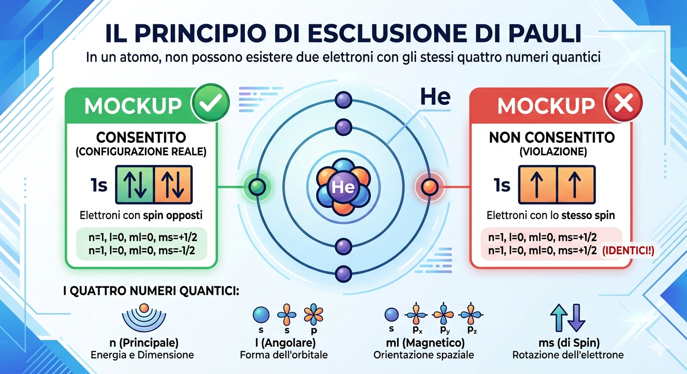
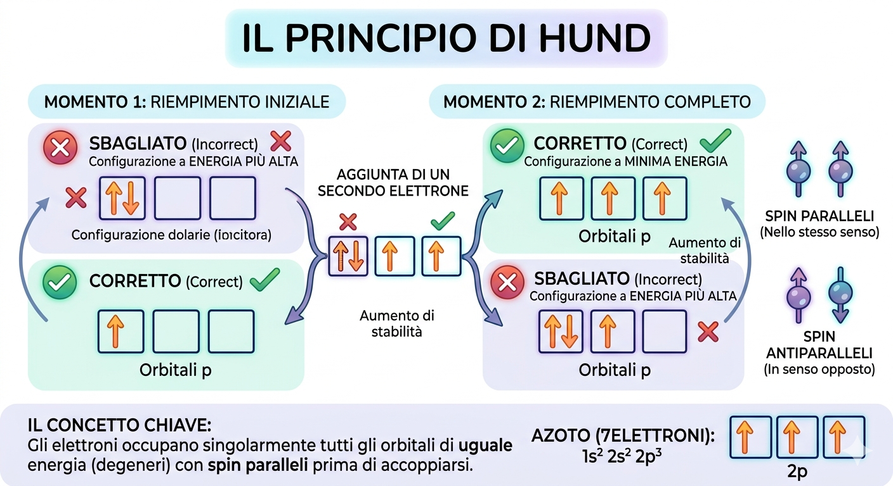
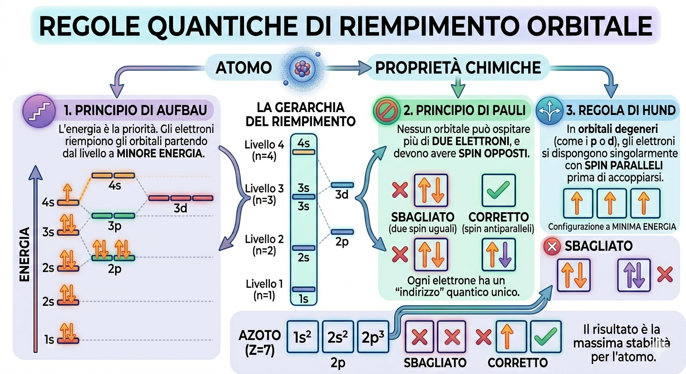
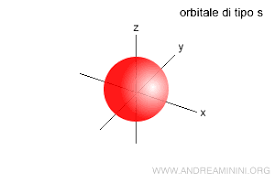
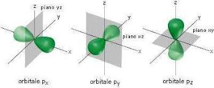
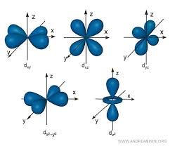
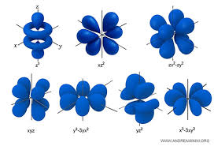
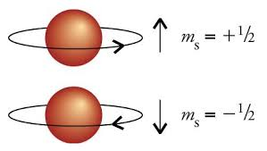

Gli orbitali atomici sono le zone attorno al nucleo di un atomo dove esiste una probabilità molto alta (solitamente superiore al 90%) di trovare un elettrone.
Questo concetto è fondamentale perché, secondo il Principio di Indeterminazione di Heisenberg, non è possibile conoscere contemporaneamente, e con precisione assoluta, la posizione e la quantità di moto (velocità) di un elettrone.
Per studiare il comportamento degli elettroni negli orbitali, gli scienziati hanno definito tre regole cardine che descrivono come le particelle si dispongono all'interno dell'atomo:
| Principio | Descrizione | Schema Visivo |
|---|---|---|
| Principio di Pauli | In un atomo non possono esistere due elettroni che abbiano tutti e quattro i numeri quantici uguali. Di conseguenza, un singolo orbitale può ospitare un massimo di 2 elettroni, purché abbiano spin diverso (opposto). |  |
| Principio di Hund | Gli elettroni si dispongono inizialmente occupando il maggior numero possibile di orbitali vuoti dello stesso livello energetico, posizionandosi un elettrone alla volta con spin parallelo. Solo quando tutti gli orbitali di quel livello hanno un elettrone, allora inizia l'accoppiamento. |  |
| Principio di Aufbau | Gli elettroni occupano sempre gli orbitali partendo da quelli a minore energia disponibile, per poi salire progressivamente verso quelli a energia più alta solo dopo aver completato i precedenti. |  |
I numeri quantici sono un insieme di quattro valori numerici che descrivono completamente lo stato e le caratteristiche di un elettrone all'interno di un atomo.
Il numero quantico principale, indicato con la lettera n, costituisce il parametro fondamentale per determinare l'energia e la distanza media di un elettrone rispetto al nucleo atomico. Questo valore identifica il livello energetico, spesso definito "guscio", in cui la particella risiede: a un valore di n più basso corrisponde una vicinanza maggiore al nucleo e un legame elettrostatico più forte, mentre l'aumento di n comporta uno spostamento verso regioni più esterne e un incremento dell'energia potenziale dell'elettrone.
I valori ammissibili per n sono esclusivamente numeri interi positivi, che partono dall'unità e procedono in successione (1, 2, 3 ...). Sebbene teoricamente non vi sia un limite superiore, negli atomi allo stato fondamentale presenti nella tavola periodica si osservano valori che arrivano fino a 7. Ogni livello individuato da n possiede una specifica capacità di ospitare elettroni, calcolabile attraverso la relazione matematica 2n²; di conseguenza, i gusci più esterni dispongono di un volume maggiore e possono accogliere un numero più elevato di cariche rispetto a quelli più interni. In sintesi, n definisce la gerarchia dei livelli energetici e la dimensione spaziale degli orbitali all'interno della struttura atomica.
Il numero quantico secondario, noto anche come numero quantico azimutale o del momento angolare, viene indicato con la lettera l. Mentre il numero quantico principale stabilisce la dimensione e l'energia del livello, l ha il compito di definire la forma geometrica degli orbitali e di suddividere ogni livello energetico in sottolivelli più specifici.
I valori che l può assumere dipendono strettamente dal valore di n: per un dato livello energetico, l può essere un qualsiasi numero intero compreso tra 0 e n - 1. Ad esempio, se ci si trova nel primo livello (n=1), l'unico valore possibile per l è 0; nel secondo livello (n=2), l può essere 0 oppure 1, e così via. Questa dipendenza matematica riflette il fatto che, man mano che ci si allontana dal nucleo, aumenta lo spazio disponibile e, di conseguenza, la complessità delle forme che le nubi elettroniche possono assumere.
| Sottolivello e Forma Geometrica | Rappresentazione |
|---|---|
| l = 0 (Sottolivello s): corrisponde a un orbitale di forma sferica. Contiene 1 solo orbitale e massimo 2 elettroni. |  |
| l = 1 (Sottolivello p): ha una forma a doppio lobo (simile a un manubrio o a un otto). Contiene 3 orbitali distinti e massimo 6 elettroni. |  |
| l = 2 (Sottolivello d): ha una complessa forma a quadrifoglio a quattro lobi. Contiene esattamente 5 orbitali e può ospitare fino a un massimo di 10 elettroni. |  |
| l = 3 (Sottolivello f): ha una geometria articolata multilobata. Contiene esattamente 7 orbitali e può ospitare fino a un massimo di 14 elettroni. |  |
Il numero quantico magnetico, spesso definito come terzo o terziario nella sequenza di studio della chimica moderna, ha il compito fondamentale di determinare l'orientamento spaziale di un orbitale atomico all'interno di un sistema di assi cartesiani tridimensionali. Mentre il numero quantico principale stabilisce la dimensione e l'energia del livello, e il numero secondario ne definisce la forma geometrica, il numero magnetico specifica la direzione in cui questa forma è rivolta nello spazio. Di conseguenza, questo parametro stabilisce con precisione quanti orbitali dello stesso tipo possono coesistere all'interno dello stesso sottolivello energetico.
Dal punto di vista matematico, i valori che questo numero può assumere sono strettamente vincolati dal valore del numero quantico secondario. La regola prevede che il numero magnetico possa esprimersi attraverso tutti i numeri interi, compreso lo zero, che spaziano dal valore negativo del numero secondario fino al suo corrispettivo positivo. La formula per calcolare il numero totale di orientamenti, e quindi di orbitali disponibili per quel blocco, consiste nel moltiplicare per due il numero secondario e aggiungere uno.
Applicando questa regola alle diverse tipologie di orbitali, si ottengono i precisi assetti che governano la struttura elettronica degli elementi. Nel caso degli orbitali di tipo s, il cui numero secondario è pari a zero, il numero magnetico può assumere un unico valore, ovvero lo zero stesso. Questo indica la presenza di un solo orbitale s per livello, una condizione coerente con la sua geometria sferica che, per sua natura, non possiede orientamenti preferenziali nello spazio.
Quando si passa agli orbitali di tipo p, il cui valore secondario è uno, il numero magnetico può assumere tre valori distinti: meno uno, zero e più uno. Ciò si traduce nella presenza di tre orbitali p separati, orientati rispettivamente lungo i tre assi dello spazio tridimensionale. Per gli orbitali di tipo d, con valore secondario pari a due, i valori possibili salgono a cinque, generando cinque orbitali differenti. Infine, per gli orbitali di tipo f, il cui valore secondario è tre, si ottengono sete valori magnetici diversi, che corrispondono a sette orbitali dalle orientazioni spaziali estremamente articolate.
In un atomo che si trova isolato e non influenzato da forze esterne, tutti gli orbitali che appartengono allo stesso sottolivello possiedono la stessa identica energia. Questa condizione di parità energetica viene modificata solo nel momento in cui l'atomo viene immerso all'interno di un campo magnetico esterno, il quale interagisce in modo differenziato con i singoli orientamenti spaziali, separando i livelli di energia prima equivalenti.
Il numero quantico di spin rappresenta la quarta e ultima coordinata fondamentale utilizzata dalla chimica e dalla fisica quantistica per descrivere in modo completo lo stato di un elettrone dentro un atomo. A differenza dei primi tre numeri quantici, che definiscono le caratteristiche dello spazio occupato dall'orbitale, ovvero la sua dimensione, la sua forma geometrica e il suo orientamento tridimensionale, lo spin descrive una proprietà intrinseca e magnetica dell'elettrone stesso, indipendente dal tipo di orbitale in cui si trova.
Per visualizzare questo concetto in modo intuitivo, si ricorre spesso all'analogia meccanica dell'elettrone visto come una minuscola sfera carica che ruota su se stessa attorno al proprio asse. Se la particella ruota in senso orario genera un microcampo magnetico orientato in una determinata direzione, mentre se ruota in senso antiorario genera un campo magnetico opposto. Sebbene la fisica quantistica moderna specifichi che gli elettroni non sono sfere fisiche in rotazione, questa immagine classica rimane un ottimo modello visivo per comprendere il fenomeno.
Dal punto di vista dei valori numerici, lo spin può esprimersi soltanto attraverso due stati possibili e simmetrici, che vengono indicati convenzionalmente come +½ e -½. Nelle rappresentazioni grafiche delle configurazioni elettroniche, questi due stati opposti vengono quasi sempre visualizzati sotto forma di frecce orientate verso l'alto oppure verso il basso. Non esistono altre frazioni, numeri interi o valori intermedi possibili per questa proprietà.
L'importanza cruciale dello spin si manifesta pienamente attraverso il principio di esclusione di Pauli, una regola fondamentale che governa la struttura della materia. Questo principio stabilisce che all'interno di uno stesso atomo non possono esistere due elettroni che possiedono tutti e quattro i numeri quantici identici. Di conseguenza, poiché lo spazio di un singolo orbitale è definito univocamente dai primi tre numeri quantici, esso potrà ospitare al massimo due elettroni, a patto che questi abbiano spin opposti, cioè uno con valore più un mezzo e uno con valore meno un mezzo.
Questa alternanza di spin è la chiave che permette la stabilità chimica e la costruzione della tavola periodica. Quando due elettroni occupano lo stesso orbitale con spin opposti, i loro rispettivi microcampi magnetici si cancellano a vicenda, creando una condizione di accoppiamento stabile. Al contrario, quando gli elementi chimici presentano orbitali parzialmente riempiti con elettroni aventi lo stesso spin, l'atomo manifesta spiccate proprietà magnetiche macroscopiche, che sono alla base del comportamento dei materiali magnetici che utilizziamo ogni giorno.
